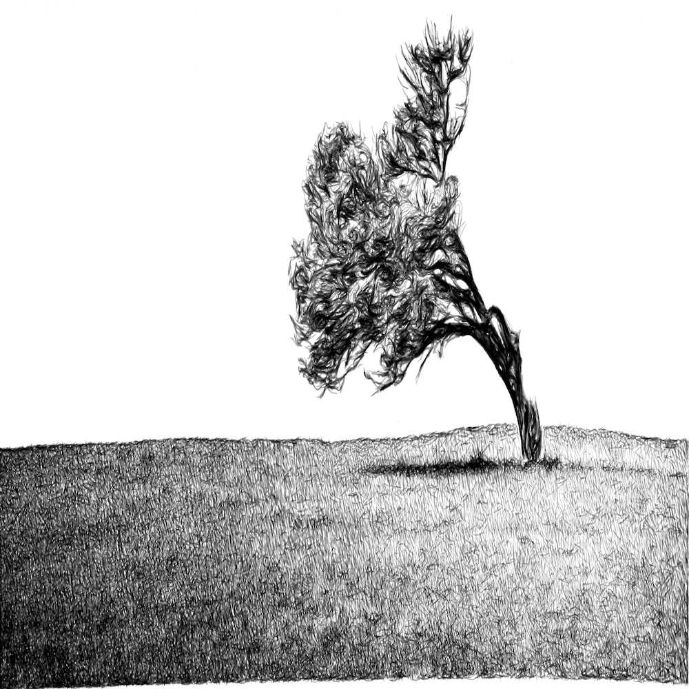

Systems of art
A website setting out research into working with computers to produce art
|

eDavid The work produced seeks "accuracy" and research talks about "errors" in the brush stroke and how to rectify these. Takes the heart out of art. More like a complicated printer. Basically seeks to imitate an artist and improve on the "imperfections". Roman Verostko Used calligraphy brushes and a pen plotter. Looking to create art of a "pure form" like early C20th artists. Wanted to create "visual form with a life of its own". The visual forms are not an abstraction of the world around them. 
Vera Molnar Uses simple graphics and repetition to produce complex works. Vera Molnar "This may sound paradoxical, but the machine, which is thought to be cold and inhuman, can help to realise what is most subjective, unattainable, and profound in a human being". Leonel Moura Writes about unmanned art and making mechanical organisms that can produce their own art. Essentially rendering the artist obsolete whilst imitating the artist - prefering certain colors, actions etc. Using random. Random seems to be fairly essential to imitate life. |